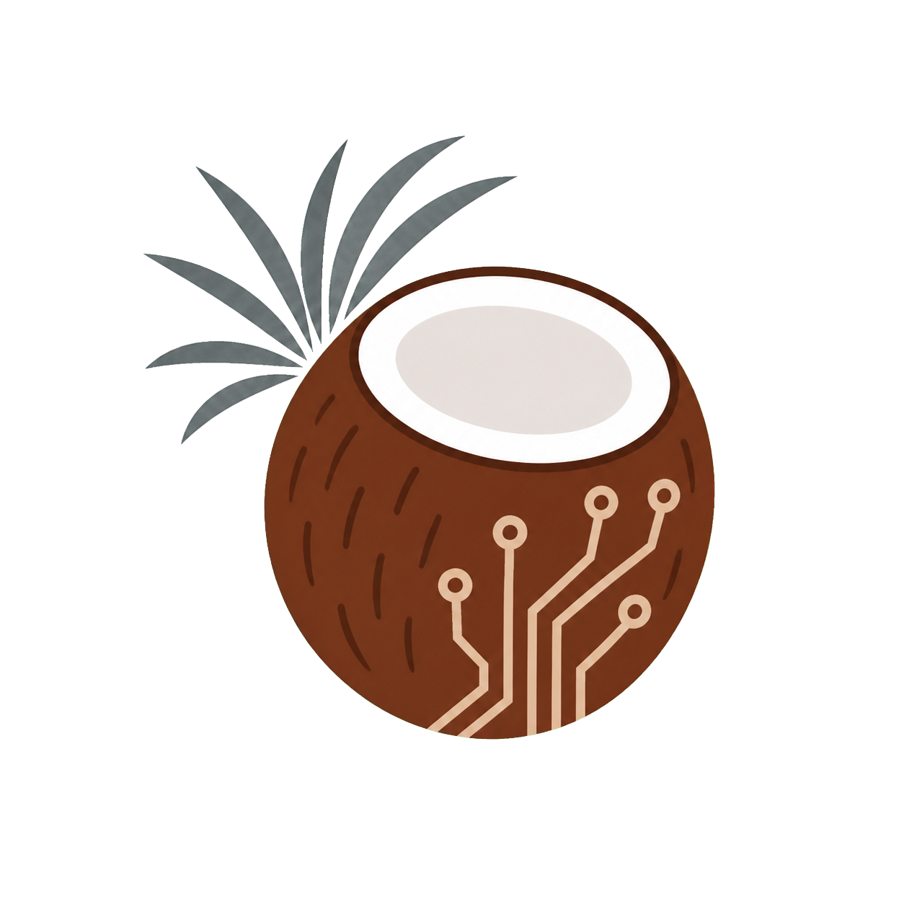

G
GPU Safeguard+
GPU 電源與安全議題的論壇資料、案例與研究報告。
查看報告 →
GPU Safeguard+、PC 組裝資料、PSU Rating 與 Ryzen CPU 趨勢報告入口。
選取下方主題即可查看最新內容。
GPU 電源與安全議題的論壇資料、案例與研究報告。
查看報告 →PCPartPicker、Pangoly 與品牌組裝資料的比較報告。
查看報告 →比較 80 Plus、Cybenetics、PPLP 在硬體論壇中的信任與購買參考訊號。
查看報告 →Reddit Ryzen 7000／9000 系列 CPU 燒毀、壞掉與 POST Code 00 案例。
查看報告 →hardwarelab ｜ PSU Rating 維持獨立 repo。未來新增報告時，只需新增一張卡片；各報告的 New! 標示仍在原報告內管理。